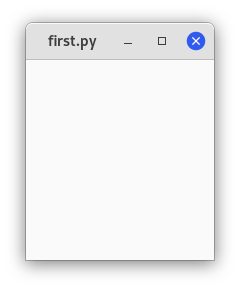
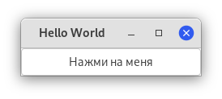
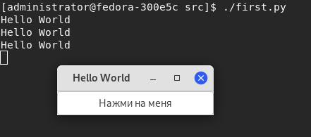

Начиная
Простой пример
Начнём с малого. Создадим пустое окно 200х200 pic:
#!/usr/bin/python3
import gi
gi.require_version("Gtk", "3.0")
from gi.repository import Gtk
win = Gtk.Window()
win.connect("destroy", Gtk.main_quit)
win.show_all()
Gtk.main()
Теперь мы объясним каждую строчку кода.
import gi
gi.require_version("Gtk", "3.0")
from gi.repository import Gtk
Вы должны импортировать модуль Gtk, чтобы иметь доступ к классам и функциям GTK+. В системе пользователя может ыбть установлено несколько версий GTK+ одновременно, поэтому нужно убедиться, что при импорте Gtk он будет ссылаться на GTK+3, а не на любую другую версию библиотеки, что является целью оператора gi.require_version("Gtk", "3.0").
Следующее создаёт пустое окно:
win = Gtk.Window()
Затем выполняется подключение к событию удаления окна, чтобы гарантировать завершение работы приложения, если мы щёлкнем по X, чтобы закрыть окно.
win.connect("destroy", Gtk.main_quit)
Следующее показывает окно на экран:
win.show_all()
Наконец, запускаем цикл обработки GTK+, который завершаем при закрытии окна (см шестую строку):
Gtk.main()
Для запуска программы выполните:
chmod +x example1.py
./example1.py
Откроется следующее окно:

Расширенный пример
Версия "классического" Hello World:
import gi
gi.require_version("Gtk", "3.0")
from gi.repository import Gtk
class MyWindow(Gtk.Window):
def __init__(self):
super().__init__(title="Hello World")
self.button = Gtk.Button(label="Нажми на меня")
self.button.connect("clicked", self.on_button_clicked)
self.add(self.button)
def on_button_clicked(self, widget):
print("Hello World")
win = MyWindow()
win.connect("destroy", Gtk.main_quit)
win.show_all()
Gtk.main()
Этот пример отличается от предыдущего тем, что мы создаём подкласс Gtk.Window для определения нашего собственного класса MyWindow:
class MyWindow(Gtk.Window):
В конструкторе класса мы должны вызвать конструктор суперкласса. Кроме того, мы говорим ему установить значение свойства title на Hello World
super().__init__(title="Hello World")
Следующие три строки используются для создания виджета кнопки, подключения к его сигналу нажатия и добавления его в качестве дочернего элемента в окно верхнего уровня.
self.button = Gtk.Button(label="Нажми на меня")
self.button.connect("clicked", self.on_button_clicked)
self.add(self.button)
Соответственно, метод on_button_clicked() будет вызываться, если вы нажмёте на кнопку.
def on_button_clicked(self, widget):
print("Hello World")
Последний блок вне класса очень похож на пример выше, но вместо создания экземпляра общего класса Gtk.Window мы создаём экземпляр MyWindow.
Откроется соедующее окно:

Вывод в терминал:
